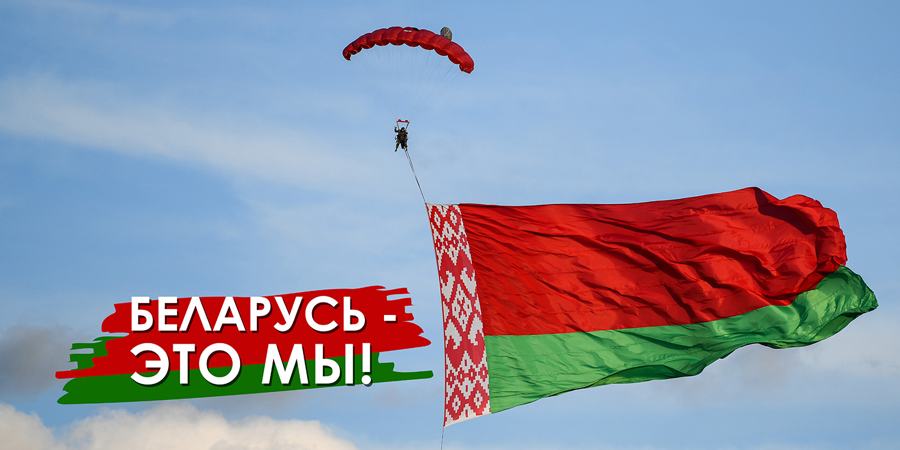
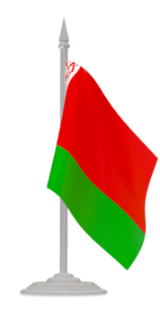
Источник наших ценностей - историческая память. В сложнейших условиях закалились многовековые духовно-нравственные ориентиры, сформировался настоящий белорусский характер. Сегодня больше говорится о Великой Отечественной войне, но это не означает забвение или неприятие других этапов развития государственности. В течение нашей жизни мы должны к этому вернуться, чтобы показать нашим детям и молодежи, - кто мы и откуда, что мы прошли и сколько потеряли человеческих жизней, стремясь к нашей независимости.
Беларусь в цифрах
В Беларуси под оккупацией, продолжавшейся почти три года, оказались около 8 млн жителей и около 900 тыс. советских военнопленных. Главным средством насаждения своего "нового порядка" нацисты избрали политику геноцида и массового террора. Концлагеря, тюрьмы, гетто действовали практически в каждом районе Беларуси. Всего в пределах республики было создано 260 лагерей смерти и 70 гетто.
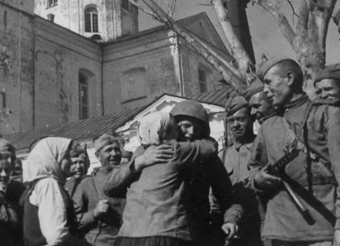
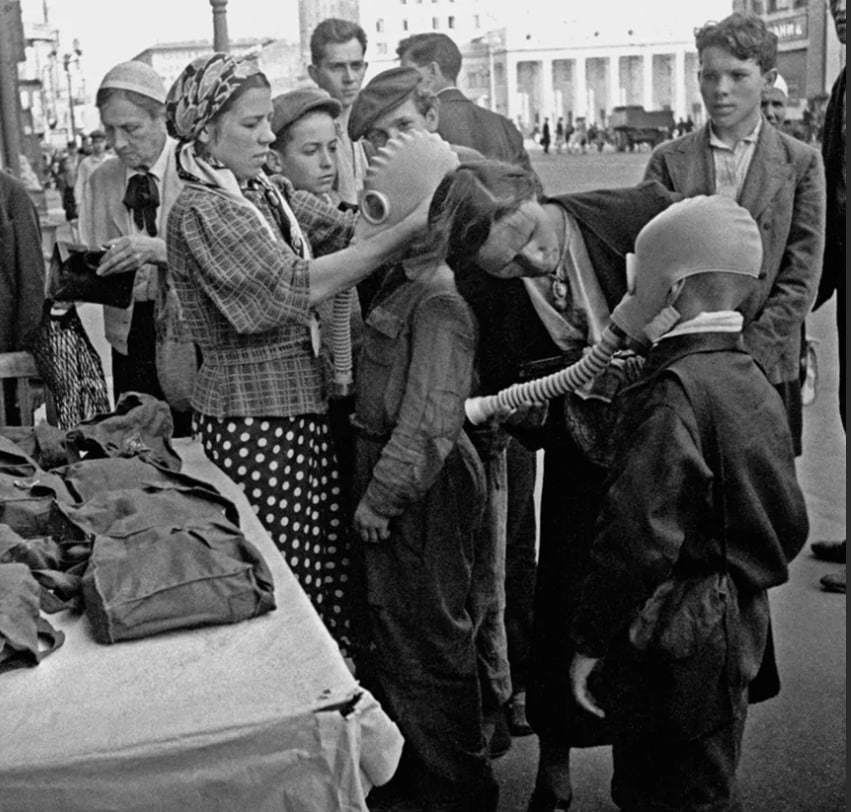
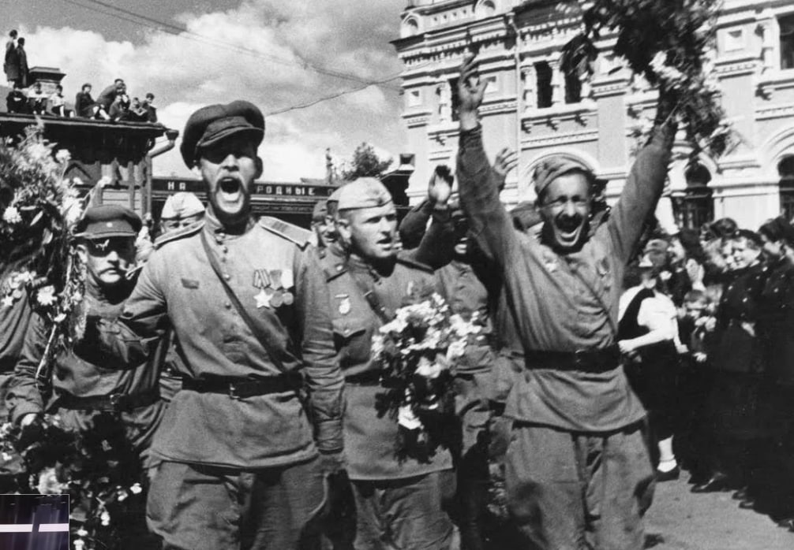
Как всё начиналось?
Дети войны
Обелиски великого подвига
История Беларуси
Историко-культурные наследия Беларуси
Республика Беларусь имеет богатое духовное наследие. Оно формировалось на протяжении веков и передавалось из поколения в поколение. Несмотря на разрушительные войны, стихийные бедствия, общество приумножало достижения предков, развивало науку, литературу, искусство, повышало свой культурно-образовательный, профессиональный уровень. Совокупность материальных и духовных благ, созданных обществом, и есть национальное богатство.
×
Самая популярная достопримечательность Беларуси, резиденция известного рода Радзивиллов, внесенная в Список всемирного наследия ЮНЕСКО, является выдающимся примером оборонительного зодчества XVI-XVII веков. Сочетание готики, барокко и ренессанса сделало замок уникальным сооружением в Европе.
×
Чудо инженерной мысли ХIХ века - искусственный водный путь, связавший Балтийское и Черное моря - входит в мировую тройку наравне с каналом Гота в Швеции и Каледонским в Великобритании. Здесь можно увидеть уникальные гидротехнические сооружения, отправиться в путешествие на теплоходе или байдарке по живописным и экологически чистым местам.
×
Гомельский дворец, возвышающийся на берегу реки, некогда принадлежал одному из фаворитов Екатерины II - графу Петру Румянцеву-Задунайскому. В XIX веке имение купил известный полководец Иван Паскевич, собравший здесь богатейшую коллекцию произведений искусства и антиквариата. Последней владелицей резиденции была княгиня Ирина Паскевич - автор первого перевода романа Льва Толстого "Война и мир" на французский язык.
×
Собор Софии Премудрости Божией - один из самых ранних православных храмов в Европе и первый каменный в Беларуси, претендует на внесение в Список всемирного наследия ЮНЕСКО. Возведенный в 1044 - 1066 годах по распоряжению князя Всеслава Чародея, он олицетворял независимое и могущественное Полоцкое княжество. Собор появился после своих "старших сестер" в Киеве и Новгороде, построенных по образцу собора в Константинополе, и стал четвертым в мире храмом Святой Софии.
×
За сказочную красоту и особую утонченность неоготический замок в Коссово называли "рыцарской грезой". На протяжении столетий им владели влиятельные династии: Хрептовичи, Сангушки, Флемминги, Чарторыйские, Сапеги. Но "золотой век" имения наступил во времена богатого промышленника графа Вандолина Пусловского, который первым в Беларуси внедрил в производство паровую машину.
Жемчужины Беларуси
Достижения Беларуси
Наши достижения
Белорусские ученые уже давно известны за пределами нашей страны. За последние годы получили мировое признание многочисленные отечественные разработки - такие как самые большие карьерные самосвалы, современные электробусы, прототипы электромобиля, супероптика и другие. Многие интересные изобретения неизвестны широкой аудитории, но, определенно, заслуживают ее внимания.
Наши светлые умы работают в различных отраслях и создают вещи, которые в значительной мере упрощают и улучшают жизнь.
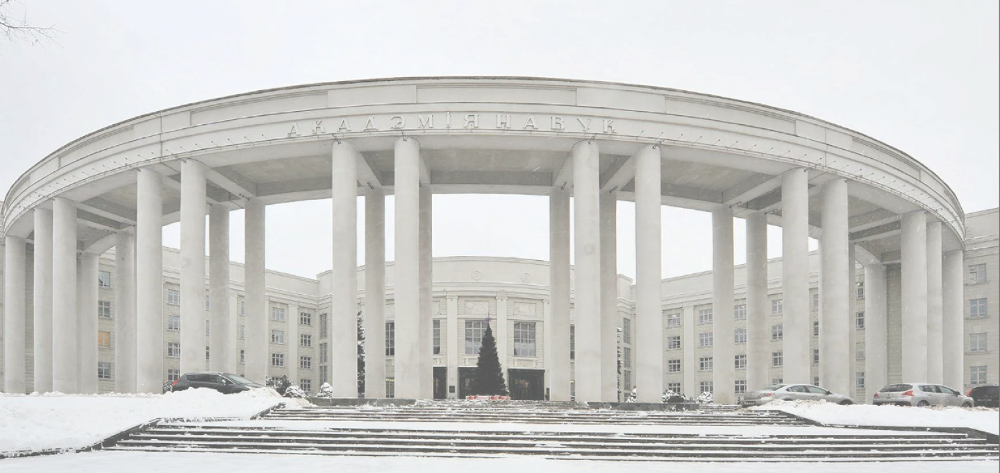
За последнюю четверть века белорусские ученые достигли серьезных успехов и стали участниками крупнейших международных проектов...
Читать далее
Сегодня в РНПЦ "Мать и дитя" привозят самых тяжелых пациентов со всей страны ...
Читать далее
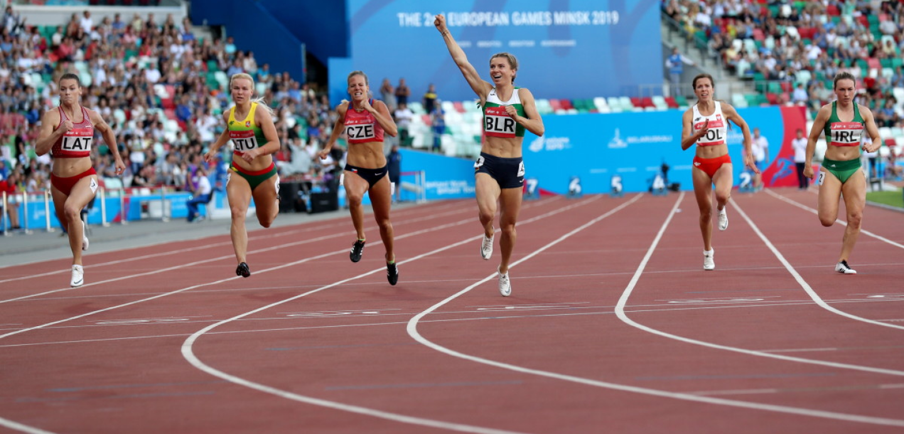
Республика Беларусь занимает достойное место в мировой спортивной семье. Страна стабильно входит в двадцатку сильнейших держав мира, принимающих участие в Олимпийских играх...
Читать далее
Социальные проекты:
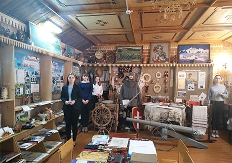
От истоков до наших дней
Молодечненский район
Гуманитарный проект осуществляется в ГУО "Лебедевская средняя школа Молодечненского района", где важным звеном обученния является историко-краеведческий музей "Спадчына". Он основан в 1984 году ...
Посмотреть
“Живая рука” и браслет заботы
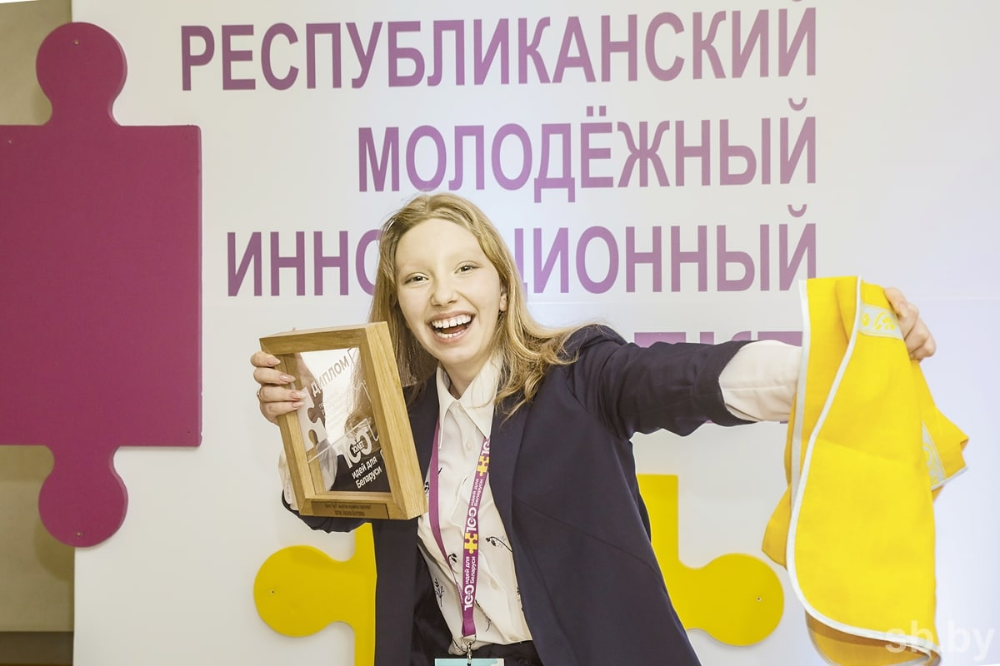
Екатерина Зайцева из Витебского района
Что скрывается за великими изобретениями? Возьмите годы кропотливой работы, разбавьте их десятками экспериментов и допущенных ошибок, внезапными прозрениями и неиссякаемым энтузиазмом. И вот идея на миллион готова.
Посмотреть
Экологические проблемы-решаем вместе
В последнее время экологические проблемы становятся все более масштабными. Во многих странах уже давно приняты меры по их решению. Для этого издают законы, проводят многочисленные акции. А как с этим обстоят дела в нашей стране?
Посмотреть
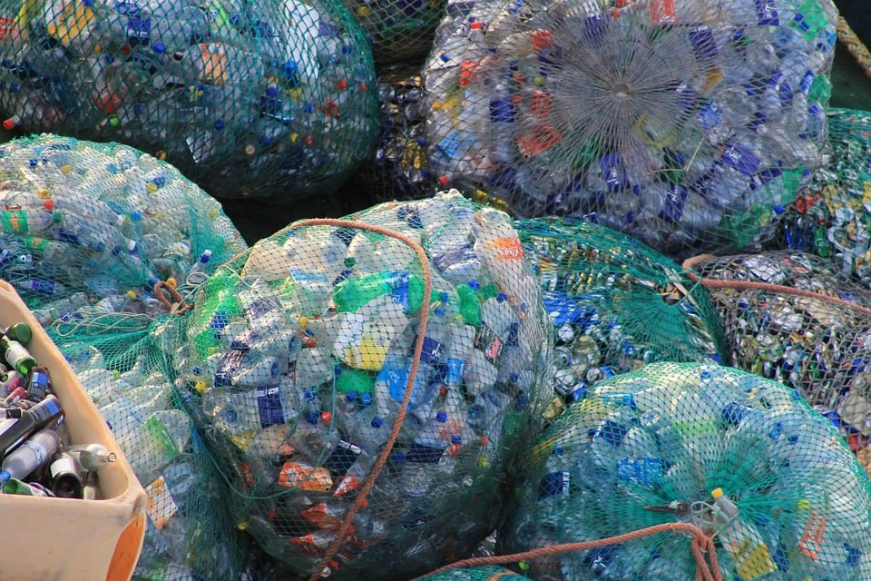
Как вы считаете, какие гуманитарные проекты помогут в развитии большего патриотизма у молодежи?
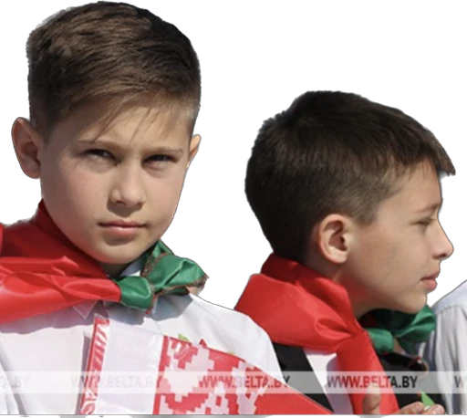
Оставьте ваш отзыв (не более 600 символов)
Отправить